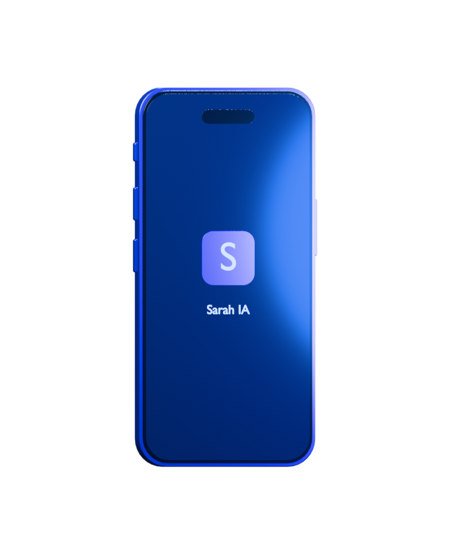

Élixir bleu
Une finition métallique aux reflets électriques.
SARAH IA · POUR IPHONE
Votre intelligence, à portée de main.
Découvrez Sarah IA sur iPhone.
Version de test iOS · Signature locale requise

PENSÉ DANS CHAQUE DÉTAIL
Un châssis bleu intense. Des reflets qui suivent la lumière. Chaque élément trouve sa place, puis Sarah IA s’éveille.
Une finition métallique aux reflets électriques.
Le châssis, les optiques et l’écran s’assemblent en 3D.
Le logo s’illumine une fois l’assemblage terminé.
Création visuelle « iPhone 18 Pro » : concept artistique, indépendant d’Apple.
À VOUS DE JOUER
Récupérez la version de test de Sarah IA au format IPA.
Ouvrez le fichier dans votre outil de signature habituel.
Signez l’application localement, puis ouvrez Sarah IA.
L’IPA doit être signée avant de pouvoir être ouverte sur votre appareil.